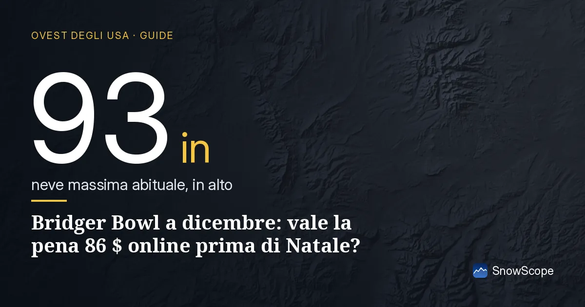

Bridger Bowl a dicembre: vale la pena 86 $ online prima di Natale?
Bridger Bowl, l'impianto non-profit vicino a Bozeman, fa pagare la giornata intera $86 online—nessun sovrapprezzo nel fine settimana, nessun trucco. Il problema è la tempistica. A metà montagna si raggiungono 20 cm il 15 dicembre solo in metà degli inverni passati, ma la settimana di Natale porta neve buona nel 78 % degli anni.
Le previsioni neve in tempo reale per Bridger Bowl nell'app SnowScopeAltezza neve, allerte powder e mappa 3D, gratis.
L'impianto e il biglietto
Bridger sorge nella catena Bridger a nord di Bozeman con 12 impianti e circa 42 km di piste tra 1.865 m e 2.457 m. I pendii superiori sono ripidi; le piste inferiori sono lunghe e dolci.
Una giornata intera costa $86 online o $99 alla cassa per adulti dai 19 ai 69 anni. Il biglietto pomeridiano dalle 12:30 costa $74. Se pianifichi tre visite, l'Any Day Pack costa $230 per tre giorni non consecutivi senza date di esclusione.

Inizio dicembre: magro e irregolare
La neve arriva regolarmente a metà ottobre a metà montagna (2.161 m), ma dicembre si accumula lentamente. In un tipico 1 dicembre, a metà montagna ci sono 37 cm. Entro il 15 dicembre, sale a 51 cm—la soglia per lo sci buono—ma solo metà degli inverni passati ha raggiunto quella profondità entro quella data.
La base, a 1.865 m, è più magra: un tipico 15 dicembre mostra 31 cm, e solo il 24 % degli inverni raggiunge 20 cm lì. La cima (2.457 m) se la cava meglio con 73 cm il 15 dicembre nel 78 % degli inverni. La neve di inizio stagione è sparsa e rocce o terreno possono affiorare alle quote inferiori.

Settimana di Natale: il punto di svolta
Entro Natale, a metà montagna sale a 57 cm tipicamente, e il 72 % degli inverni supera 20 cm. La cima raggiunge 79 cm nel 85 % degli inverni. Entro il 31 dicembre, le probabilità si rafforzano ancora: a metà montagna la media è 69 cm nel 76 % degli inverni, e la cima 88 cm nell'87 %.
Nella settimana 21–27 dicembre, il 78 % degli inverni passati ha portato neve buona a metà montagna. Questo è il passaggio dal rischioso al affidabile. Se puoi aspettare fino a fine dicembre, il terreno ripido di Bridger e la trasparenza dei prezzi premiano la pazienza.
Come si confronta questo inverno
Gli inverni passati mostrano un declino graduale della neve di dicembre. I primi 15 inverni del nostro archivio (1980–81 a 1994–95) hanno avuto una media di 73 cm a metà montagna il 15 dicembre, con il 67 % sopra 20 cm. Gli ultimi 15 inverni (2011–12 a 2025–26) hanno avuto una media di 50 cm, con il 47 %. L'inverno scorso aveva 45 cm in quella data, sotto la norma recente.
Questo trend riflette cambiamenti più ampi nella regione, non solo Bridger. La montagna continua a vedere accumulo affidabile da gennaio in poi, quando la profondità mediana di picco a metà montagna è 141 cm.
Bridger versus vicini
Montana Snowbowl, a ovest di Missoula, chiede $78 feriali e $85 nel fine settimana. A metà montagna (1.909 m) ha una media di 76 cm il 15 dicembre nel 83 % degli inverni—una scommessa più forte per inizio stagione. Snow King a Jackson chiede $100 e ha una media di 71 cm con l'87 % di probabilità.
Per una gita di un giorno da Bozeman a inizio dicembre, Snowbowl supera Bridger in profondità di neve. Per la settimana di Natale in avanti, il prezzo online $86 di Bridger e il terreno per esperti vincono. La differenza tra $78 e $86 importa meno quando le probabilità di neve saltano dal 50 % al 78 %.
Cosa portare e cosa controllare
Bridger Canyon Road può gelare dopo le mattinate di polvere: porta pneumatici da neve e aspettati traffico lento. Pianifica una partenza presto o accetta i ritardi. La montagna superiore è terreno ripido e serio che richiede attrezzatura valanghe, un compagno e un previsione valanghe attuale—controlla il Gallatin National Forest Avalanche Center prima di andare fuori pista.
Consigli per sciatori
- Compra il biglietto online a $86, mai alla cassa ($99). Nel corso di una giornata di guida, quel risparmio paga una birra.
- Evita la scommessa: salta 1–15 dicembre a meno che tu non stia cercando la cima 2.457 m, dove il 78 % degli inverni ha neve buona. Pianifica la settimana di Natale in avanti invece.
- Usa l'Any Day Pack ($230 per tre giorni) per dividere le visite tra fine dicembre e gennaio, quando la neve è più profonda e affidabile.
- Bridger Canyon Road si ghiaccia facilmente. Parti presto, porta pneumatici da neve e fai scorta di pazienza sul viaggio di ritorno.
- Il terreno superiore richiede addestramento e attrezzatura valanghe. Consulta la previsione valanghe ufficiale prima di lasciare l'area dell'impianto.
Su questi numeri
Le altezze neve delle località sono la neve più alta sui pendii superiori alla data indicata; sono stime per un'area, non una misura in un punto. Le previsioni possono cambiare. Leggi sempre il bollettino valanghe ufficiale prima del fuoripista.
Bollettini valanghe ufficiali: Gallatin National Forest Avalanche Center
Cita questo articolo
Per ricerca, didattica o stampa: numeri e grafici sono liberamente riutilizzabili con licenza CC BY 4.0 citando così.
SnowScope (2026), Bridger Bowl a dicembre: vale la pena 86 $ online prima di Natale?, https://snowscope.app/blog/it/2026/11/bridger-bowl-bozeman-december-ski-cost.html, consultato il 2026-11-15
SnowScope (Atlas Labs). (2026, November 15). Bridger Bowl a dicembre: vale la pena 86 $ online prima di Natale?. SnowScope snow reports. https://snowscope.app/blog/it/2026/11/bridger-bowl-bozeman-december-ski-cost.html
BibTeX
@misc{snowscope2026bridgerbowlbozemandecemb,
author = {{SnowScope (Atlas Labs)}},
title = {Bridger Bowl a dicembre: vale la pena 86 $ online prima di Natale?},
year = {2026},
month = nov,
howpublished = {\url{https://snowscope.app/blog/it/2026/11/bridger-bowl-bozeman-december-ski-cost.html}},
note = {Published 2026-11-15 09:34 UTC; accessed 2026-11-15}
}· CC BY 4.0 · Metodi, dati e strumenti →
Bridger Bowl: neve e temperatura per quota, quest'inverno vs lo scorso (strumenti) →
Segui Bridger Bowl
Gratis: un messaggio quando arriva la neve e il meteo ogni mattina.